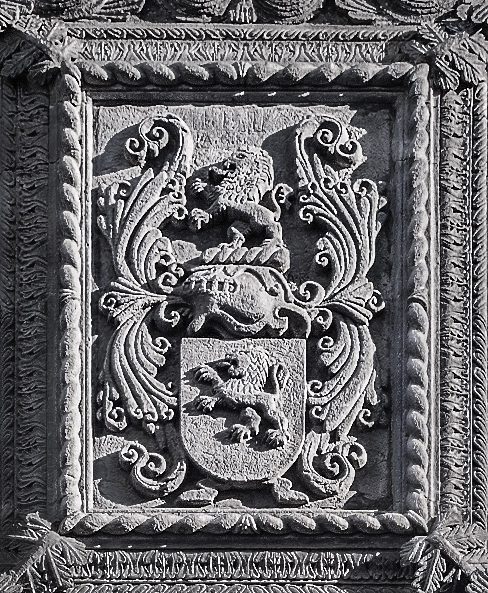

Origem e Significado do Sobrenome Bittencourt
© Paulo Bittencourt
Brasão da família, na fachada do Palácio Bettencourt, em Angra do Heroísmo, Açores.
Com quantos tês se faz um Bittencourt?
De todos os seus irmãos e irmãs, meu pai foi o único a ser registrado com erro de grafia, razão por que, na minha certidão de nascimento, meu sobrenome paterno tem só um tê no meio: Bitencourt. Na internet, escrevo-o com dois para ficar igual à grafia original da família. Mas será que Bittencourt com dois tês no meio é mesmo a grafia original desse sobrenome?
Muitos Bittencourts se orgulham de seus dois tês juntos, dizendo ser a grafia correta, visto que original, desse nome de família. Devem achar que os dois tês lhe conferem um ar de nobreza. Sinto muito destruir seu castelinho de areia, mas Bittencourt é um sobrenome muito antigo. Como quase todos os nomes de família que são muito antigos, sua exata origem é desconhecida, o que torna impossível estabelecer sua grafia original e, portanto, correta. Além disso, sofreu muitas alterações. A menção mais antiga, que é do século XIII, é Béthencourt. Como se vê, nada de dois tês juntos. Bittencourt com i e dois tês juntos é apenas a forma mais comum no Brasil. Em outros países, esse sobrenome é grafado diferentemente. A variante mais famosa é Betancourt, por causa do internacionalmente noticiado sequestro, em 2002, da então senadora colombiana Íngrid Betancourt.
Agustín de Betancourt (Бетанкур), em São Petersburgo, engenheiro espanhol responsável por muito do desenvolvimento da Rússia.
Alguns nomes de família estrangeiros têm significado óbvio, como o alemão Weingarten. Wein = vinho; Garten = jardim, mas também horta e pomar. Em outras palavras, vinhedo. O significado de Bittencourt, que é um sobrenome francês, não é óbvio. Pelo que, após muita pesquisa, consegui descobrir, é possível que Bitten venha de beterraba e court, de pátio, nesse caso um pátio em que se cultiva essa hortaliça, fazendo Bittencourt significar horta de beterraba.
Paulo Beethoven
Se realmente significa horta de beterraba, Bittencourt e Beethoven são o mesmo nome de família: aquele em francês; este, em holandês. Os pais do desguedelhado compositor alemão eram da Bélgica, onde se fala três línguas: francês, alemão e holandês. Na região holandesa, há um vilarejo denominado Bettenhoven, cuja placa bilíngue diz, em francês, — tchã, tchã, tchã, tchããããã… — Bettincourt! Muita coincidência, não? Há quem afirme que o sobrenome Beethoven vem dessa localidade.
Holandês e alemão são línguas muito parecidas, e, uma vez que falo alemão fluentemente, posso confirmar que, como Bittencourt, Beethoven de fato pode significar horta de beterraba. A primeira parte, Beet, é a grafia antiga de biet, que é beterraba. A segunda parte, Hoven, é o plural de hof, que é pátio, mas também sítio e jardim. Em holandês, Jardim do Éden inclusive é Hof van Eden. Hof e horta vêm do latim hortus (ambas as palavras até começam com ho).
Aposto que você ficou com vontade de ouvir uma sinfonia de Bittencourt, perdão, Beethoven. Por que não fazer isso comendo beterraba?
EN • DE • Sua opinião